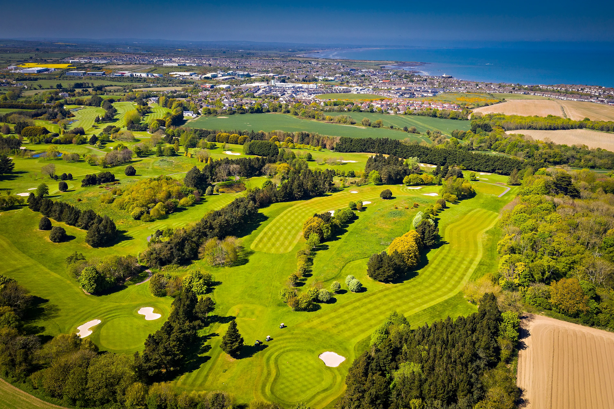
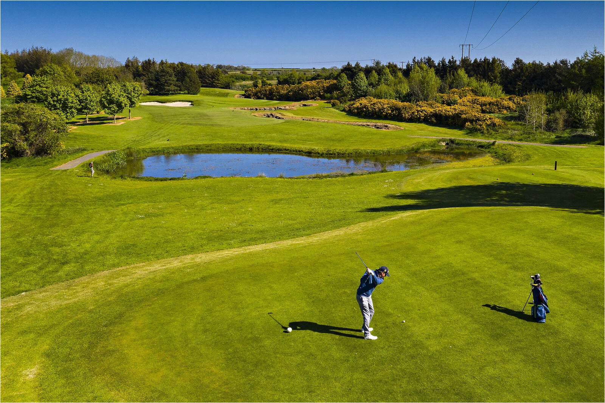

VIEW OUR
MENUS
Explore our selection of breakfast, lunch and dinner menus, made with fresh ingredients and something for everyone.

Everyday dining, lunch, Sunday food and our
changing specials. Bringing good food and
good company together.
BOOK A TABLE NOW
Food and hospitality for visiting societies and golf groups, with delicious dining and a welcoming atmosphere for everyone.
HERE